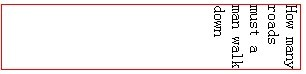
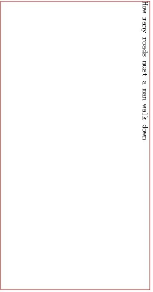
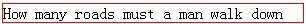

'wirting-mode' 简介
在 IE5.5 中就已经有了 'writing-mode' 特性，后续的 IE 版本继续提供了对此特性的支持。但是，各版本之间对此特性的支持也有差异。
通过 'writing-mode' 特性可以设置或获取一个元素内容的方向或对齐方式。
而且，'writing-mode' 也是在1999年至2001年 CSS3 规范的草案中的特性。但是，后来的草案中，该属性被剔除。所以，本文不对此属性做过多说明。
关于 'writing-mode' 的详细资料 :
只有 IE 支持 'writing-mode' 特性。
这个问题可能引起其他浏览器与 IE6 IE7 IE8 中页面布局的不同，因为文字的排列方式可能会影响其包含块的高度宽度计算。
| IE6 IE7 IE8 |
|---|
分析以下代码：
<style> .wt { width:300px; border:1px solid red; writing-mode:tb-rl; }
</style> <p class="wt">How many roads must a man walk down</p>
这段代码在不同的浏览器环境中表现如下：
| IE6 IE7 IE8(Q) |
|---|
|  |
| IE8(S) |
|  |
| Firefox Opera Safari Chrome |
|  |
可见，在所有版本的 IE 中，文字都是垂直排列的，但是 IE8 的标准模式又跟其他版本在高度的计算上有所不同。
除 IE 外，其他浏览器不支持 'writing-mode'，所以把它当作不合法的声明丢弃。
这个问题可能引起其他浏览器与 IE 中页面布局的不同，因为文字的排列方式可能会影响其包含块的高度宽度计算。
其他浏览器中不支持文字的垂直排列，所以，尽量避免使用 IE 中特有的 'writing-mode' 特性。
| 操作系统版本: | Windows 7 Ultimate build 7600 |
|---|---|
| 浏览器版本: |
IE6
IE7 IE8 Firefox 3.6.6 Chrome 6.0.447.0 dev Safari 4.0.4 Opera 10.51 |
| 测试页面: | writing_mode.html |
| 本文更新时间: | 2010-06-29 |
wrting-mode tb-rl